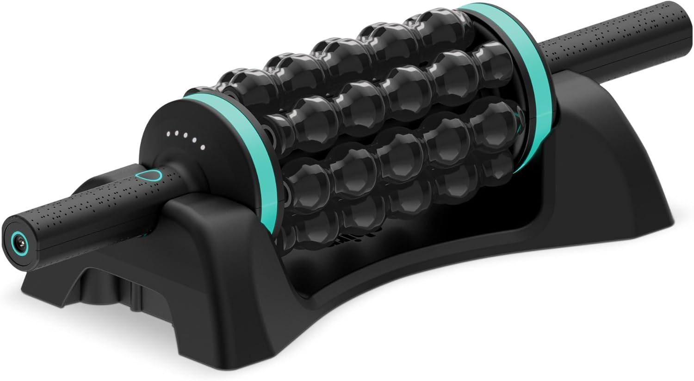
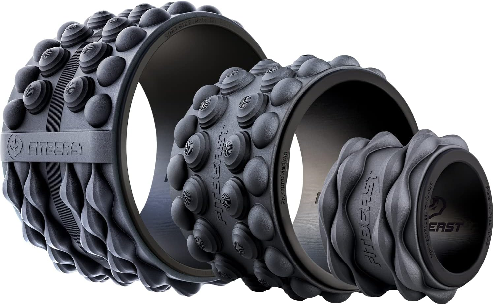
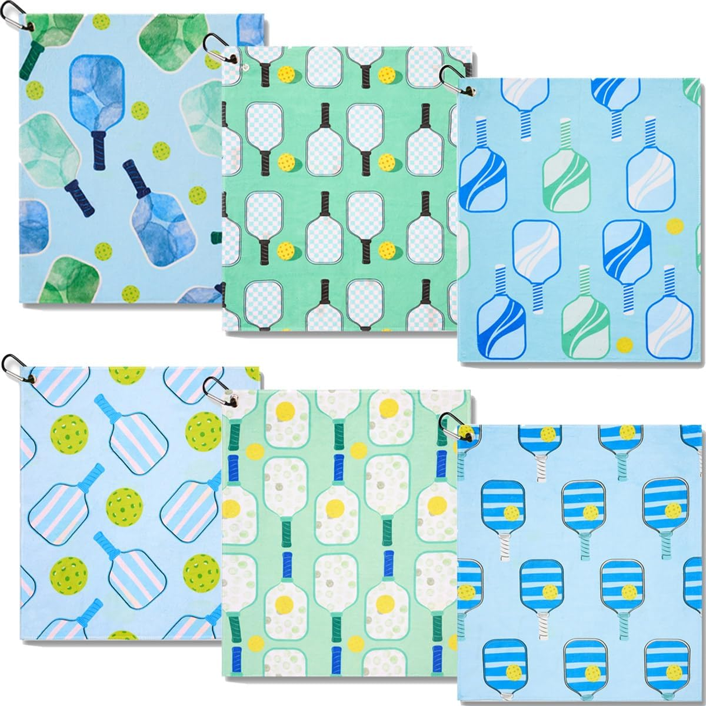
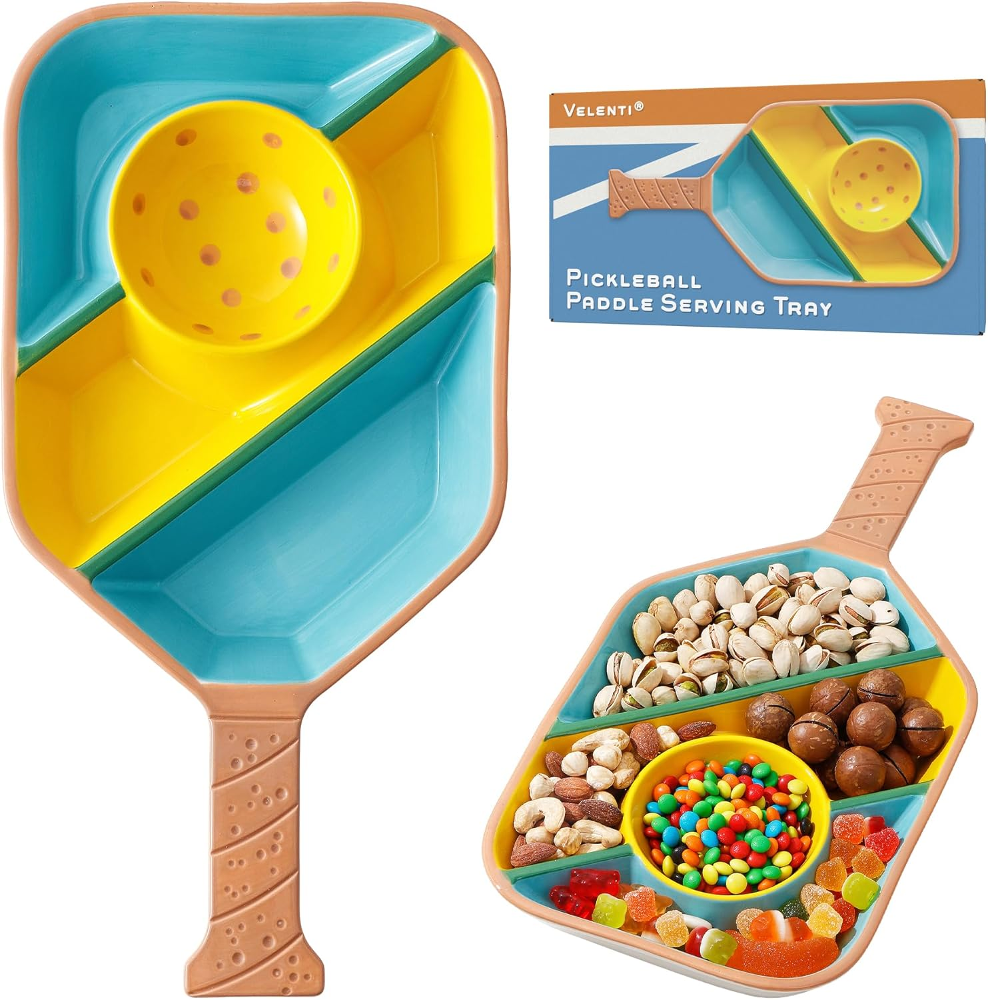
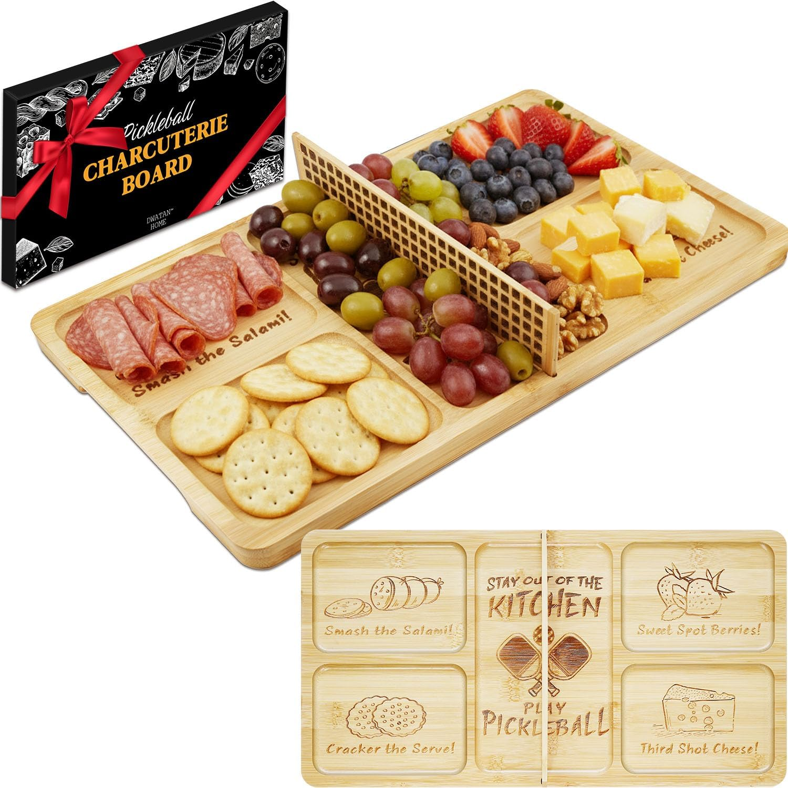

🏓 Best Pickleball Paddles for Florida Players
Premium
Selkirk Sport
SLK Helix Pro — Carbon Fiber & Fiberglass Hybrid
Thermoformed carbon fiber face for unmatched control. The number one brand in pickleball.
Why We Put It On Our Page
The thermoformed carbon fiber core delivers shot consistency and a larger sweet spot — we see this paddle winning points on Naples courts every weekend.
Selkirk is the brand pros trust. When a husband used this paddle for the first time his team won 11-0. That says everything.
Premium
TENVINA
T700SC Textured Carbon Fiber Paddle
Multi-layer T700SC carbon fiber with strong spin and power surface. USAPA approved in 4 shapes.
Why We Put It On Our Page
The textured carbon face grips the ball for serious spin — exactly what advanced Florida players need to dominate the kitchen line.
Four shape and thickness options means you can dial in the exact feel for your playing style. Rare at this price point.
Best Seller
JOOLA
Astral Perseus — Carbon Fiber with NFC Chip
Beginner friendly carbon fiber sandblasted surface for spin and control. NFC chip enabled.
Why We Put It On Our Page
Carbon fiber at a beginner price — this paddle lets new players feel professional quality control from their very first game on any Florida court.
The NFC chip lets you scan the paddle to verify authenticity and access performance data. A genuinely clever feature.

JOOLA
Stratos — Lightweight Fiberglass with Large Sweet Spot
Polypropylene core for added control. USAPA approved. Multiple color options for all levels.
Why We Put It On Our Page
The oversized sweet spot makes every shot feel forgiving — perfect for recreational Florida players who want consistency without frustration.
Available in multiple colors so you can match your court look. On a Florida court style matters just as much as performance.
Beginner
Various
USAPA Approved Fiberglass Rackets — Set of 2 or 4
Affordable fiberglass surface rackets for men and women. Great starter option.
Why We Put It On Our Page
The best entry point to get started without breaking the bank — USAPA approved means you can play in any official Florida tournament right away.
Buying as a set means you can introduce a friend or partner to the game instantly.
👟 Best Pickleball Shoes for Florida Courts
Women
ASICS
Gel-Resolution X Tennis Shoes — Women's
The pinnacle of ASICS court engineering with maximum stability and lateral support.
Why We Put It On Our Page
The DYNAWALL and DYNALACING support system delivers maximum ankle stabilization — essential for the quick lateral movements Florida pickleball demands.
Tournament-level durability means this shoe lasts through hundreds of Florida court sessions.
Women
ASICS
Gel-Nimbus 28 Running Shoes — Women's
Premium cushioning flagship for all day comfort on and off the court.
Why We Put It On Our Page
The Gel-Nimbus is ASICS' most cushioned shoe — ideal for Florida players who want comfort from the court to brunch without changing shoes.
The responsive foam midsole absorbs impact on hard Florida outdoor courts, protecting your joints during long match sessions.
Women
ASICS
Gel-Pulse 17 Running Shoes — Women's
Lightweight and responsive with Gel cushioning for extended court sessions.
Why We Put It On Our Page
Lightweight enough to feel fast on court but cushioned enough for Florida's hard outdoor surfaces — the sweet spot most active women need.
The breathable mesh upper keeps feet cool during those hot Florida afternoon matches.
Men
ASICS
Gel-Dedicate 8 Pickleball Shoes — Men's
Purpose-built pickleball shoe. Game ready straight out of the box.
Why We Put It On Our Page
Rated 8 out of 10 for traction by independent reviewers — no slipping on Florida court surfaces during those game-changing lateral moves at the net.
APMA certified meaning podiatrists approve it for foot health. The TRUSSTIC midfoot support prevents twisting during aggressive play.
Men
K-Swiss
Express Light Pickleball Shoe — Men's
Top tier pickleball shoe delivering comfort, performance, and durability.
Why We Put It On Our Page
The Aosta 7.0 rubber outsole with modified herringbone tread delivers outstanding traction across every Florida court surface — indoor and outdoor.
Players report all day wearability — a rare combination of lightweight feel and substantial cushioning that Florida court veterans swear by.
Men
ASICS
Gel-Contend 9 Running Shoes — Men's
Reliable everyday trainer with Gel cushioning for active Florida lifestyle players.
Why We Put It On Our Page
The GEL cushioning absorbs impact with every step — protecting your joints whether you are on the court or walking the Naples waterfront.
Versatile enough to wear court to street — the Florida lifestyle player lives actively all day long.
🕶️ Best Sunglasses for Florida Pickleball
Premium
Oakley
Flak 2.0 XL Rectangle Sunglasses
A benchmark in sports eyewear with over 5,700 five-star reviews on Amazon.
Why We Put It On Our Page
Oakley's High Definition Optics optimizes every millimeter of your peripheral view — crucial for tracking a fast-moving pickleball in Florida sunshine.
Prescription compatible. If you wear glasses this is the only sport eyewear worth considering for serious Florida court play.
Premium
Oakley
Radar EV Path Shield Sunglasses
Iconic shield design with extended field of view and lightweight O-Matter frame.
Why We Put It On Our Page
The extended vertical lens height gives you an unobstructed field of view from baseline to net — exactly what you need to read your opponent's shot in bright Florida sun.
The lightweight O-Matter frame means you forget you are wearing them during long matches. Comfort without sacrifice.
🥎 Tournament Quality Pickleball Balls
Tournament
Selkirk Sport
Pro S1 Outdoor Pickleball Balls — USAPA Approved
Crack-resistant with advanced aerodynamics. 38-hole design for outdoor tournament play.
Why We Put It On Our Page
The crack-resistant construction is specifically engineered for Florida's hard outdoor courts and temperature variations — these balls last longer than anything else we have tested.
USAPA approved for tournament play means when you practice with these you are using the exact same ball as major Florida championships.
💪 Pickleball Recovery — Feel Great On and Off the Court
Recovery

Chirp
RPM Rolling Percussive Massager
Deep tissue muscle massager and back roller with hands-free base. 5-speed rechargeable leg and calf massager.
Why We Put It On Our Page
The rotating percussion technology combines targeted pressure with movement to loosen tight muscles, improve circulation, and reduce soreness after long Florida court sessions.
Unlike traditional foam rollers, the Chirp RPM lets you pinpoint hard-to-reach areas like shoulders, calves, forearms, and feet — faster and more effective recovery.
Recovery
Recovery
Knee Massager — Heat & Compression
Targeted knee relief with heat therapy and compression. Perfect for active pickleball players.
Why We Put It On Our Page
Pickleball puts significant stress on knees from lateral movements and quick stops — targeted heat and compression helps reduce inflammation and soreness after hard Florida court sessions.
Easy to use at home, courtside, or while traveling to Florida tournaments. Plug in, wrap up, and let it work.
Recovery

Recovery
Back Roller — Spinal Decompression & Relief
Targeted back relief and spinal decompression for active players.
Why We Put It On Our Page
Florida pickleball players spend hours bent over the kitchen line — this back roller targets the exact tension points that build up from competitive play.
A few minutes of daily rolling keeps your back loose, your posture strong, and your game consistent week after week.
🎁 Pickleball Enthusiast Gift Ideas
Gift Idea

Court Essentials
Pickleball Cooling Towels
Instant cooling relief for hot Florida court sessions. Reusable and fast-drying.
Why We Put It On Our Page
Playing pickleball in Florida summer heat is serious business — a cooling towel around your neck between games can lower your body temperature fast and keep you playing longer.
Every Florida court bag needs one. Wet it, snap it, instant cool. Vivian keeps three in the golf cart at all times.
Gift Idea

Gift Ideas
Pickleball Platter — Perfect for the Player Who Has Everything
A curated pickleball-themed gift that any Florida court regular will love.
Why We Put It On Our Page
The perfect gift for the Florida pickleball player in your life — whether it's a birthday, retirement, holiday, or just because someone finally beat you at the kitchen line.
Unique, thoughtful, and something no one else is giving. It tells the recipient you actually know what they love.
Gift Idea

Gift Ideas
Pickleball Charcuterie Board Set
A pickleball-themed charcuterie board — the ultimate post-game entertaining gift.
Why We Put It On Our Page
Nicolette would approve — this gift combines two of the best things about Florida pickleball culture: the game and the post-game spread. Perfect for the social player who entertains.
Genuinely unique gift that works for any occasion — birthdays, holidays, tournament prizes, or just spoiling someone who showed up at 7am every Tuesday all summer.
🏁 Complete Sets & Nets — Everything to Start Playing
Complete Set
JOOLA
Pickleball Paddles Set — 2 Rackets, Balls & Carry Bag
Complete starter set with reinforced fiberglass paddles, balls, and storage bag. USAPA approved.
Why We Put It On Our Page
Everything in one box — paddles, balls, and bag. The perfect gift for someone you want to introduce to Florida pickleball.
JOOLA is a trusted brand with decades of paddle sport heritage. This set punches well above its price point.
Family Set
niupipo
Pickleball Set of 2 or 4 with Balls and Bag
USAPA approved fiberglass set with honeycomb core paddles, balls, and bag.
Why We Put It On Our Page
The polypropylene honeycomb core absorbs vibration — comfortable enough for beginners and their wrists during long Florida sessions.
Available as a set of 2 or 4 — perfect for couples, family games, or bringing friends to your Florida court for the first time.
Net System
Portable Net
22FT Regulation Pickleball Net with Paddles Set & Bag
Full regulation size portable net with paddles, outdoor balls, and carry bag.
Why We Put It On Our Page
Set up a full regulation court in your Florida driveway, backyard, or community space in minutes — no permanent installation required.
Everything in one carry bag. The ultimate gift for anyone who wants to play anywhere in Florida on their own terms.
Premium Set
Selkirk Sport
SLK Pickleball Paddles Set of 2
Choose from SLK Neo Graphite, Neo Fiberglass, or Atlas Bundle. Designed in the USA.
Why We Put It On Our Page
Selkirk paddles are used by professional players. Getting a set of two means you and your partner play with pro-level equipment from day one on any Florida court.
Three bundle options — graphite for control, fiberglass for power, or the Atlas for versatility. Selkirk never cuts corners.

Court Signage
2026 Official Pickleball Rules Sign — 12x18 Metal
Durable aluminum waterproof rules sign. Fade resistant for Florida outdoor courts.
Why We Put It On Our Page
Every Florida community court, club, and backyard setup needs this. No more debates about the rules mid-game.
Weather-resistant aluminum holds up against Florida humidity, rain, and intense sun. Mount it once and forget it for years.